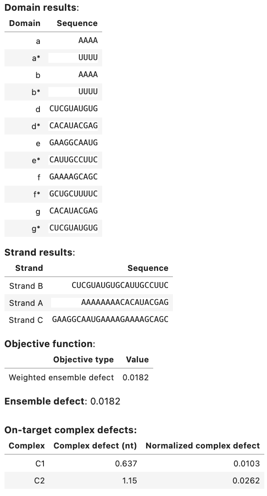
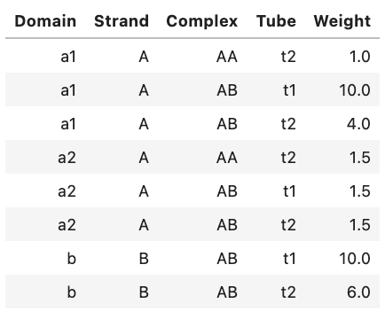
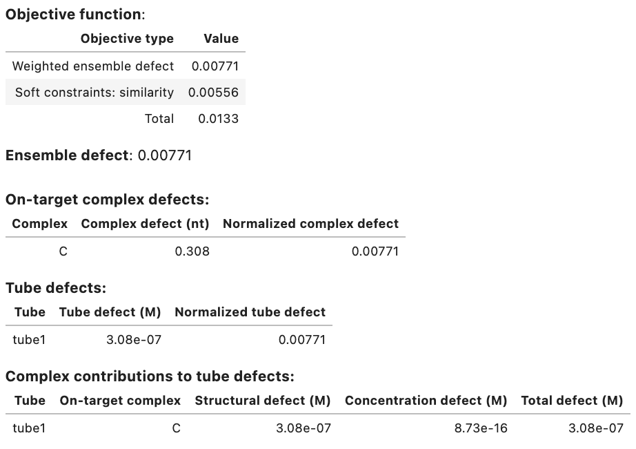
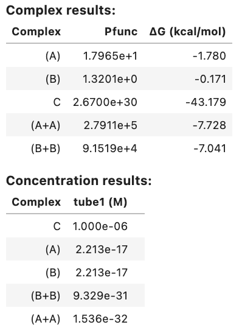
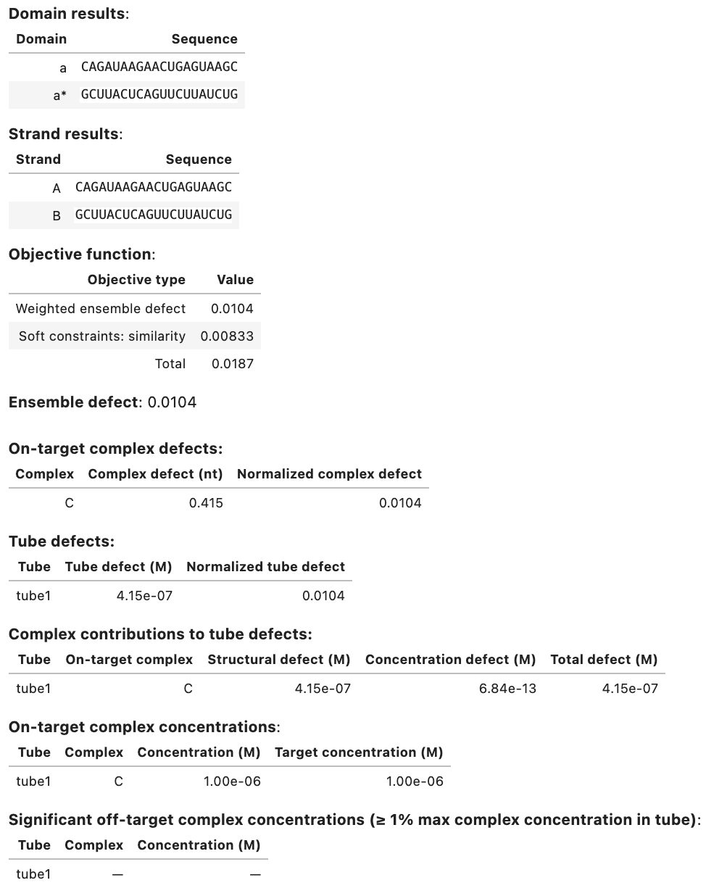

Design Jobs¶
To enable reaction pathway engineering of dynamic hybridization cascades (e.g., shape and sequence transduction using small conditional RNAs [Hochrein13,HanewichHollatz19]) or large-scale structural engineering including pseudoknots (e.g., RNA origamis [Geary14]), NUPACK sequence design operates on multistate ensembles:
- Multi-complex ensemble: the ensemble of an arbitrary number of strand species interacting to form an arbitrary number of complex species.
- Multi-tube ensemble: the ensemble of an arbitrary number of test tubes containing different subsets of an arbitrary number of strand species introduced at user-specified concentrations.
We recommend using the multi-tube design ensemble as it captures concentration and crosstalk effects that are critical in most experimental settings.
For reaction pathway engineering, sequence design is formulated as a multistate optimization problem using a set of target test tubes to represent reactant, intermediate, and product states of the system, as well as to model crosstalk between components. Note that we achieve kinetic design of a test tube ensemble by performing equilibrium optimization of a multi-tube ensemble: each target test tube isolates different subsets of components in local equilibrium, enabling optimization of kinetically significant states that would appear insignificant if all components were allowed to interact in a single ensemble. For large-scale structural engineering including the possibility of pseudoknots, each target test tube is unpseudoknotted, but by imposing sequence constraints between tubes, it is possible to collectively impose pseudoknotted design requirements.
In a multi-tube design ensemble, each target test tube contains a set of desired “on-target” complexes, each with a target secondary structure and target concentration, and a set of undesired “off-target” complexes, each with vanishing target concentration. Optimization of the multi-tube ensemble defect implements both a positive design paradigm, explicitly designing for on-pathway elementary steps, and a negative design paradigm, explicitly designing against off-pathway crosstalk. Defect weights can be specified to prioritize or de-priotize design quality for different portions of the design ensemble. Sequence design is performed subject to user-specified hard constraints (e.g., sequence constraints imposed by the reaction pathway or biological sequences) and soft constraints (e.g., design a set of toeholds to have comparable binding strength).
Specify a domain¶
A domain is a set of consecutive nucleotides that appear as a subsequence of one or more strands in a design. A domain is specified as a sequence (specified 5' to 3' using degenerate nucleotide codes) and a domain name (keyword name). Consecutive repeats of a single nucleotide code can be represented by the nucleotide code followed by the total number of repeats:
a = Domain('AAAA', name='a')
b = Domain('A4', name='b') # equivalent sequence specification
c = Domain('NNNNNNNNNN', name='c')
d = Domain('N10', name='d') # equivalent sequence specification
e = Domain('RRRRRNNNNN', name='e')
f = Domain('R5N5', name='f') # equivalent sequence specification
g = Domain('N10', name='g')
The reverse complement of domain a is denoted ~a. Complementarity refers to Watson-Crick complementarity if wobble mutations are prohibited (default) or includes the possibility of G\cdotU wobble pairs for RNA if wobble mutations are permitted (see Job Options).
Note
Note that starting with NUPACK 4 and the all-new NUPACK Python module, scripts no longer denote the reverse complement of domain a as a* because that would not be valid Python syntax.
Specify a target strand¶
A TargetStrand is a single RNA or DNA molecule specified as a sequence (specified 5' to 3' in terms of previously defined domains) and a target strand name (keyword name):
A = TargetStrand([a, b, g], name='Strand A')
B = TargetStrand([d, ~e], name='Strand B') # ~e denotes the reverse complement of e
C = TargetStrand([e, a, f], name='Strand C')
D = TargetStrand([d, d, d], name='Strand D')
Additional fields and methods are available for a TargetStrand object:
.domains: a tuple of the domains comprising the strand.ndomains(): the number of domains in the strand.nt(): the number of nucleotides in the strand
For example:
A.domains # --> (<Domain a>, <Domain b>, <Domain g>)
A.ndomains() # --> 3
A.nt() # --> 18
The reverse complement of a TargetStrand maybe analogous obtained, for example, as ~A.
Specify a target complex¶
A TargetComplex is an on- and/or off-target complex specified as an ordered list of strands (i.e., an ordering of strands around a circle in a polymer graph) and a complex name (keyword name). If the complex is to be used as an on-target complex in at least one target test tube, it is specified with an on-target secondary structure (specified in dot-parens-plus, run-length encoded dot-parens-plus, or DU+ notation):
# dot-parens-plus notation
C1 = TargetComplex([A, B, C], '........((((((((((+))))))))))((((((((((+))))))))))..............', name='C1')
# run-length encoded dot-parens-plus notation
C2 = TargetComplex([B, C], '.10(10+)10.14', name='C2')
# DU+ notation
C3 = TargetComplex([D, D], 'D30 +', name='C3')
C4 = TargetComplex([B, B, B], 'D10(D10 + D10 +)', name='C4')
C5 = TargetComplex([B, A, B], 'D8(U12 +) D10(+) U10', name='C5')
Note
The target structure will be used in all target test tubes in which a complex appears as an on-target complex and will be ignored in those target test tubes where a complex appears as an off-target complex.
Additional fields and methods are available for a TargetComplex object:
.strands: a tuple of the strands.nstrands(): the number of strands in the complex.nt(): the number of nucleotides in the complex
For example:
C1.strands # --> (<TargetStrand Strand A>, <TargetStrand Strand B>, <TargetStrand Strand C>)
C1.nstrands() # --> 3
C1.nt() # --> 62
In certain cases, it may be desirable to adjust the free energy of an on-target complex (for example, if a protein is known to stabilize the complex). For such cases, the optional keyword bonus can be used to specify an additional free energy in kcal/mol (default: 0; negative value is stabilizing, postive value is destabilizing):
# destabilize C6 by 1 kcal/mol
C6 = TargetComplex([B, C], '.10(10+)10.14', name='C6', bonus=+1.0)
# stabilize C7 by 10 kcal/mol
C7 = TargetComplex([B, C], '.10(10+)10.14', name='C7', bonus=-10.0)
Note
Note that a bonus applied to the complex free energy is equivalent to applying the bonus to every structure free energy in the complex ensemble. As a result, the bonus alters the equilibrium complex concentration within the test tube ensemble, but does not alter the equilibrium base-pairing probabilities within the complex ensemble.
Specify a target tube¶
A TargetTube is specified as a tube name (keyword name) and a set of on-target complexes each with a target concentration (keyword on_targets; units of M). Off-target complexes (keyword off_targets: defaults to none) can be specified using SetSpec() in any of three ways:
- Combinatorially using keyword
max_sizeto automatically generate the set of all complexes up to a specified number of strands (default:max_size=1). - Using keyword
includeto include an explicitly specified set of complexes (default:None). - Using keyword
excludeto exclude an explicitly specified set of complexes (default:None).
For example:
t1 = TargetTube(on_targets={C1: 1e-8, C2: 1e-8}, name='t1',
off_targets=SetSpec(max_size=3, include=[[B, B, B, B]], exclude=[C4]))
If desired, the on-target and off-target sets for a specified TargetTube can be queried as follows:
print(t1.on_targets) # --> {<TargetComplex C1>: 1e-08, <TargetComplex C2>: 1e-08}
print(t1.off_targets) # --> {<TargetComplex (Strand A+Strand A+Strand B)>, <TargetComplex (Strand B)>,
# <TargetComplex (Strand A+Strand A)>, <TargetComplex (Strand C+Strand B+Strand B)>,
# <TargetComplex (Strand A+Strand B+Strand B)>, <TargetComplex (Strand A+Strand C+Strand C)>,
# <TargetComplex (Strand C)>, <TargetComplex (Strand C+Strand C+Strand C)>,
# <TargetComplex (Strand A+Strand C+Strand B)>, <TargetComplex (Strand C+Strand C)>,
# <TargetComplex (Strand A+Strand C)>, <TargetComplex (Strand A+Strand A+Strand C)>,
# <TargetComplex (Strand A)>, <TargetComplex (Strand B+Strand B)>,
# <TargetComplex (Strand A+Strand B)>, <TargetComplex (Strand A+Strand A+Strand A)>,
# <TargetComplex (Strand C+Strand C+Strand B)>, <TargetComplex (Strand B+Strand B+Strand B+Strand B)>}
Note
Note that include and exclude accept both target complex identifiers (e.g., C4) and strand orderings (e.g., [B, B, B, B]).
Note that for an off-target specified using a target complex identifier (e.g., C4), the target structure is ignored since by definition, there is no target structure for an off-target complex.
Note that any complex included as an on-target complex will not be included as an off-target complex when processing max_size and include.
Note
Note that used together, max_size and exclude provide a powerful combination for specifying target test tubes. With max_size it is possible to specify a large set of off-target complexes formed from a set of system components. With exclude it is further possible to remove from this large set all of the cognate products that should form between these system components (so they appear as neither on-targets nor off-targets in the tube ensemble). For example, with this approach, the reactive species in a global crosstalk tube can be forced to either perform no reaction (remaining as desired on-targets) or to undergo a crosstalk reaction (forming undesired off-targets), enabling minimization of global crosstalk during sequence optimization.
An ensemble that excludes cognate reaction products can never be studied in the lab but provides a important framework for computational sequence optimization.
Run a test tube design job¶
The tube_design class performs constrained multi-tube design for a specified set of target test tubes (keyword tubes) and a specified physical model (keyword model). You may optionally: specify hard constraints (keyword hard_constraints), specify soft constraints (keyword soft_constraints), specify defect weights (keyword defect_weights), and specify job options (keyword options):
my_model = Model()
my_tubes = [t1]
my_design = tube_design(tubes=my_tubes,
hard_constraints=[], soft_constraints=[],
defect_weights=None, options=None, model=my_model)
A tube_design object supports two methods for performing sequence design:
run(): run multiple independent design trials in the foreground.launch(): launch multiple independent design trials in the background and save design progress to checkpoint files.
Either method can be used to restart from a previous design result (keyword restart). See below for examples using run() and launch() for the above tube_design job.
Note
run() is a blocking command that is convenient when you want to run a single quick design trial and wait for the results.launch() is a non-blocking command that offers the preferred mode of operation for large design jobs, enabling you to run long design trials in the background with built-in checkpointing.
Run design trials in the foreground¶
Once a test tube design has been specified using tube_design, use run() to run a specified number of independent design trials (keyword trials) in parallel in the foreground and return a list of DesignResult objects:
my_results = my_design.run(trials=2) # run 2 independent design trials
A DesignResult object can be viewed as a table in a Jupyter notebook, for example:
my_results[0] # display results table for first design trial
Output:

Output table displays:
- Designed sequences for each domain and strand.
- Objective function components (weighted ensemble defect and weighted soft constraints (if applicable)).
- Ensemble defect (unweighted).
- Complex defect for each on-target in the ensemble (unweighted).
- Tube defect for each tube in the ensemble (unweighted).
- Structural defect, concentration defect, and total defect for each on-target complex in each tube (unweighted).
- Concentation and target concentration for each on-target complex in each tube.
- Significant off-target complex concentrations in each tube (those off-targets with concentration \ge 1% the maximum complex concentration in the tube).
The keyword restart may be included to run a design by providing a list of DesignResult objects from a previous design job:
new_results = my_design.run(trials=2, restart=my_results)
trials and restart specify different numbers of design trials and DesignResult objects.
Launch design trials in the background¶
Once a test tube design has been specified using tube_design, use launch() to start a specified number of independent design trials (keyword trials) in parallel in the background. Intermediate results will be saved to a directory specified with keyword checkpoint at a regular interval specified with keyword interval (in seconds, default 600):
# start 2 independent design trials
my_jobs = my_design.launch(trials=2, checkpoint='my_checkpoints', interval=600)
Whereas run() returns a list of DesignResult objects representing completed design trials, launch() returns a list of trial monitors. The design trials will continue in the background.
To examine current results based on the latest checkpoint file for each trial, use the current_results() method:
my_current_results = my_jobs.current_results()
which returns a list with an entry for each trial that is either a DesignResult object (if a checkpoint file or final result is available) or None (otherwise). As illustrated above, a DesignResult object can be viewed as a table in a Jupyter notebook. For example if a checkpoint is available for the first trial, a table is generated by typing:
my_current_results[0] # display results table for first design trial
If only final results are of interest, use the final_results() method:
my_final_results = my_jobs.final_results()
which returns a list with an entry for each trial that is either a DesignResult object (if a final result is available) or None (otherwise).
To lock up the interface and wait for all trials to finish, use the wait() method to return a list of DesignResult objects:
my_final_results = my_jobs.wait()
To stop all trials, use the stop() method:
my_jobs.stop()
To restart designs from previous results, use the restart keyword, providing either a list of DesignResult objects from a previous design, or a directory name containing checkpoint files:
# restart from a list of DesignResult objects
my_jobs = my_design.launch(trials=2, checkpoint='new_checkpoints',
restart=my_current_results)
# restart from a checkpoint directory
my_jobs = my_design.launch(trials=2, checkpoint='new_checkpoints',
restart='my_checkpoints')
trials and restart specify different numbers of design trials and DesignResult objects. However, if no results exist in the supplied restart directory, the design will be started afresh without any error messages. Hence, you can create a rerunnable design by supplying the same directory to checkpoint and restart:
my_jobs = my_design.launch(trials=2, checkpoint='my_checkpoints',
restart='my_checkpoints')
Run a complex design job¶
The complex_design class enables specification of a constrained multi-complex design for a specified set of target complexes (keyword complexes) and a specified physical model (keyword model). You may optionally: specify hard constraints (keyword hard_constraints), specify soft constraints (keyword soft_constraints), specify defect weights (keyword defect_weights), and specify job options (keyword options):
my_model = Model()
my_complexes = [C1, C2]
my_design = complex_design(complexes=my_complexes,
hard_constraints=[], soft_constraints=[],
defect_weights=None, options=None, model=my_model)
result = my_design.run(trials=2) # run 2 independent design trials in the foreground
result[0]
Output:

A complex_design object supports the launch(), run(), and evaluate() methods just as for a tube_design object (see above).
Note
Note that a complex_design job is equivalent to a tube_design job with each on-target complex placed in a separate test tube containing no off-target complexes. For this reason, we strongly recommend use of test tube design formulations over complex design formulations so that off-target complexes are present in the design ensemble and the design algorithm can actively design against their formation.
Specify hard constraints¶
Hard constraints for a design job are specified as a list, for example:
# specify domains
a = Domain('N4', name='a')
b = Domain('N4', name='b')
c = Domain('N5', name='c')
d = Domain('N5', name='d')
e = Domain('N5', name='e')
f = Domain('N5', name='f')
A = TargetStrand([a, b, c], name='A')
# source sequence for window constraint
gfp = 'auggugagcaagggcgaggagcuguucaccgggguggugcccauccuggucgagcuggacggcgacguaaacggccacaaguucagcguguccggcgagggcgagggcgaugccaccuacggcaagcugacccugaaguucaucugcaccaccggcaagcugcccgugcccuggcccacccucgugaccacccugaccuacggcgugcagugcuucagccgcuaccccgaccacaugaagcagcacgacuucuucaaguccgccaugcccgaaggcuacguccaggagcgcaccaucuucuucaaggacgacggcaacuacaag'
# define list of hard constraints
my_hard_constraints = [
Match([a], [b]),
Match([a, b, f, f], [d, a, d, a]),
Complementarity([a, b, f, a, a, b], [c, d, e, c, c], wobble_mutations=True),
Similarity([c], 'S5', limits=[0.2, 0.8]), # GC content
Library([a], catalog=[['CTAC', 'TAAT']]),
Window([a, ~b], sources=[gfp]),
Pattern(['A5', 'C5', 'G5', 'U5'], scope=A),
Pattern(['A4', 'C4', 'G4', 'U4', 'M6', 'K6', 'W6', 'S6', 'R6', 'Y6']),
Diversity(word=4, types=2),
Diversity(word=6, types=3),
Diversity(word=10, types=4, scope=[a, b])
]
#two ways to add another constraint to the constraint set
my_hard_constraints += [Complementarity([e], [f], wobble_mutations=True)]
my_hard_constraints.append(Complementarity([e], [f], wobble_mutations=True))
Note
Note that the specification of a domain using degenerate nucleotide codes (as in the example above) is an implicit hard sequence constraint.
Note
Note that NUPACK will return an error if a design specification contains a fixed sequence that violates a hard constraint
See below for information about how to specify each type of hard constraint.
Match¶
A match constraint forces equal-length concatenations of one or more domains to be identical. A Match hard constraint is specified as follows:
- a first list of domains for concatenation; alternatively, a target strand may be specified
- a second list of domains for concatenation; alternatively, a target strand may be specified
a = Domain('N10', name='a')
b = Domain('N4', name='b')
c = Domain('H6', name='c')
d = Domain('N6', name='d')
e = Domain('S2', name='e')
A = TargetStrand([a, b], name='Strand A')
match1 = Match([c], [b, ~e]) # ~e is the reverse complement of e
match2 = Match([a, b], [d, d, e])
# specifying target strand A is equivalent to specifying list of domains [a, b]
match3 = Match(A, [d, d, e])
Note
Constraints that expect a list of domains for concatenation will alternatively accept a target strand.
Complementarity¶
A complementarity constraint forces a concatenation of one list of domains to be the reverse complement of an equal-length concatenation of another list of domains. A Complementarity hard constraint is specified as:
- a first list of domains for concatenation; alternatively, a target strand may be specified
- a second list of domains for concatenation; alternatively, a target strand may be specified
comp1 = Complementarity([a, b], [c, d, e])
# specifying target strand A is equivalent to specifying list of domains [a, b]
comp2 = Complementarity(A, [c, d, e])
Note
Nucleotides that are base-paired in the target structure of an on-target complex are automatically assigned a complementarity constraint.
By default, complementary sequences are required to have Watson-Crick base-pairing (A\cdotU or C\cdotG for RNA, A\cdotT or C\cdotG for DNA). To permit wobble mutations for RNA (G\cdotU) globally throughout a design, use the wobble_mutations job option. Alternatively, wobble mutations can be allowed for individual complementarity constraints (keyword wobble_mutations, default: False):
comp2 = Complementarity([a, b], [c, d, e], wobble_mutations=True)
It is also possible to force base pairs to be wobble pairs:
f = Domain('S2', name='f')
g = Domain('S2', name='g')
comp3 = Complementarity([f], [g], wobble_mutations=True)
Similarity¶
A similarity constraint forces a concatentation of domains to match a reference sequence of the same length to within a specified fractional range. A Similarity hard constraint is specified as:
- a list of domains to be concatenated; alternatively a target strand may be specified
- a reference sequence of the same length as the concatenated domains
- a fractional range, [l, u], where 0 \leq l < u \leq 1
a = Domain('N10', name='a')
b = Domain('N20', name='b')
C = TargetStrand([a, b, a], name='Strand C')
# similarity constraint for a concatenation of domains
sim1 = Similarity([a, ~a, b], 'S5K35', limits=[0.25, 0.75])
# similarity constraint for a target strand
sim2 = Similarity(C, 'S30K10', limits=[0.25, 0.75]) # for a strand
# use similarity constraint to enforce 45-55% GC content
sim3 = Similarity([a, b], 'S30', limits=[0.45, 0.55])
Note
A similarity constraint can be used to constrain sequence composition (e.g., 45-55% GC content as in the example above).
Window¶
A window constraint forces a concatenation of domains to have a sequence that is a subsequence of a source sequence. More generally, a window can be drawn from any of multiple source sequences. A Window hard constraint is specified as:
- Define one or more source sequences as strings.
- Specify a list of domains for concatenation; alternatively, specify a target strand
- Specify a list of sources from which the window should be selected
a = Domain('N10', name='a')
b = Domain('N10', name='b')
c = Domain('N10', name='c')
e = Domain('N10', name='e')
A = TargetStrand([a, ~b], name='Strand A')
gfp = 'AUGGUGAGCAAGGGCGAGGAGCUGUUCACCGGGGUGGUGCCCAUCCUGGUCGAGCUGGACGGCGACGUAAACGGCCACAAGUUCAGCGUGUCCGGCGAGGGCGAGGGCGAUGCCACCUACGGCAAGCUGACCCUGAAGUUCAUCUGCACCACCGGCAAGCUGCCCGUGCCCUGGCCCACCCUCGUGACCACCCUGACCUACGGCGUGCAGUGCUUCAGCCGCUACCCCGACCACAUGAAGCAGCACGACUUCUUCAAGUCCGCCAUGCCCGAAGGCUACGUCCAGGAGCGCACCAUCUUCUUCAAGGACGACGGCAACUACAAG'
rfp = 'CCUGCAGGACGGCGAGUUCAUCUACAAGGUGAAGCUGCGCGGCACCAACUUCCCCUCCGACGGCCCCGUAAUGCAGAAGAAGACCAUGGGCUGGGAGGCCUCCUCCGAGCGGAUGUACCCCGAGGACGGCGCCCUGAAGGGCGAGAUCAAGCAGAGGCUGAAGCUGAAGGACGGCGGCCACUACGACGCUGAGGUCAAGACCACCUACAAGGCCAAGAAGCCCGUGCAGCUGCCCGGCGCCUACAACGUCAACAUCAAGUUGGACAUCACCUCCCACAACGAGGACUACACCAUCGUGGAACAGUACGAACGCGCCGAGGGCCGCCACUCCACCGGCGGCAUGGACGAGCUGUACAAGUAA'
# constrain window to be drawn from a source
window1 = Window([a, ~b], sources=[gfp])
# window constraint for a target strand
window2 = Window(A, sources=[gfp])
# constrain window to be drawn from more either of two sources
window3 = Window([~c, e], sources=[gfp, rfp])
Library¶
A library constraint forces a concatenated list of domains to have sequences drawn from a concatenated list of libraries. Each library contains a set of alternative sequences of equal length. A Library hard constraint is specified as:
- Define one or more libraries of alternative sequences of uniform length.
- Specify a list of domains for concatentation; alternatively, specify a target strand
- Specify a list of libraries for concatenation
The sum of the length of the domains must equal the sum of the length of the libraries (where we define the length of a library to be the length of any of its elements).
a = Domain('N6', name='a')
b = Domain('N10', name='b')
c = Domain('N2', name='c')
d = Domain('N3', name='d')
e = Domain('N3', name='e')
A = TargetStrand([d, e], name='Strand A')
# define a library of sequences
toeholds = ['CAGUGG', 'AGCUCG', 'CAGGGC']
# define a library of codons for each amino acid
aaI = ['AUU', 'AUC', 'AUA']
aaL = ['CUU', 'CUC', 'CUA', 'CUG', 'UUA', 'UUG']
aaV = ['GUU', 'GUC', 'GUA', 'GUG']
aaF = ['UUU', 'UUC']
aaM = ['AUG']
aaC = ['UGU', 'UGC']
aaA = ['GCU', 'GCC', 'GCA', 'GCG']
aaG = ['GGU', 'GGC', 'GGA', 'GGG']
aaP = ['CCU', 'CCC', 'CCA', 'CCG']
aaT = ['ACU', 'ACC', 'ACA', 'ACG']
aaS = ['UCU', 'UCC', 'UCA', 'UCG', 'AGU', 'AGC']
aaY = ['UAU', 'UAC']
aaW = ['UGG']
aaQ = ['CAA', 'CAG']
aaN = ['AAU', 'AAC']
aaH = ['CAU', 'CAC']
aaE = ['GAA', 'GAG']
aaD = ['GAU', 'GAC']
aaK = ['AAA', 'AAG']
aaR = ['CGU', 'CGC', 'CGA', 'CGG', 'AGA', 'AGG']
aaSTOP = ['UAA', 'UAG', 'UGA']
# domain a is drawn from a toehold library
lib1 = Library([a], [toeholds])
# target strand A is drawn from a toehold library
lib1 = Library(A, [toeholds])
# concatenation [b, c] is drawn from a concatenation of 4 codon libraries
lib2 = Library([b, c], [aaI, aaM, aaC, aaG])
Pattern Prevention¶
A pattern prevention constraint prevents a list of patterns from appearing globally or in a concatenated list of domains. A Pattern hard constraint is specified as:
- a list of patterns to be prevented
- optionally a list of domains for concatenation (keyword
scope) where the patterns should be prevented; alternatively, a target strand may be specified - if the scope is unspecified (absence of keyword
scope), the constraint is global
a = Domain('N12', name='a')
b = Domain('N12', name='b')
A = TargetStrand([a, ~a], name='A')
B = TargetStrand([b, ~b], name='B')
# pattern prevention for concatenation [a, b]
pattern1 = Pattern(['A4', 'U4'], scope=[a, b])
# pattern prevention for target strand B
pattern2 = Pattern(['A4', 'U4'], scope=B)
# global pattern prevention
pattern3 = Pattern(['A4', 'C4', 'G4', 'U4', 'M6', 'K6', 'W6', 'S6', 'R6', 'Y6'])
Diversity¶
A diversity constraint forces every word of a specified length to contain a specified degree of sequence diversity, either globally or for a concatenated list of domains. A Diversity hard constraint is specified as:
- the word length in nucleotides (keyword
word) - the minimum number of nucleotide types that must appear in every window (keyword
types) - optionally a list of domains for concatenation (keyword
scope) where the diversity should be imposed; alternatively, a target strand may be specified - if the scope is unspecified (absence of keyword
scope), the constraint is global
a = Domain('N12', name='a')
b = Domain('N12', name='b')
A = TargetStrand([a, ~a], name='A')
C = TargetComplex([A, A], name='A+A')
# global constraints
div1 = Diversity(word=4, types=2)
div2 = Diversity(word=6, types=3)
# local constraint on concatenation [a, b]
div3 = Diversity(word=10, types=4, scope=[a, b])
# local constraint on target strand A
div4 = Diversity(word=10, types=4, scope=A)
Note
A diversity constraint that forces every window of length 4 to contain at least 2 nucleotide types is equivalent to a pattern prevention contraint that prevents patterns: AAAA, CCCC, GGGG, UUUU. Likewise, a diversity constraint that forces every window of length 6 to contain at least 3 nucleotide types is equivalent to a pattern prevention constraint that prevents: MMMMMM, KKKKKK, WWWWWW, SSSSSS, RRRRRR, YYYYYY.
We recommend diversity constraints over pattern prevention constraints because they make it more efficient to solve the constraint satisfaction problem that identifies a new validate candidate mutation at every step during sequence optimization.
The global constraints div1 and div2 reproduce the global pattern prevention constraint pattern3.
Specify soft constraints¶
Soft constraints for a design job are specified as a list, for example:
# define soft for soft constraints
my_soft_constraints = [
Pattern(['A4', 'U4'], scope=a),
Pattern(['A5', 'C5', 'G5', 'U5'], scope=A), # default weight 1
Pattern(['A4', 'C4', 'G4', 'U4', 'M6', 'K6', 'W6', 'S6', 'R6', 'Y6'], weight=0.5),
Similarity([b], 'S12', limits=[0.45, 0.55], weight=0.25),
SSM(word=4, scope=[C], weight=0.15),
EnergyMatch([a, b]), # min energy diff to median
EnergyMatch([a, b], energy_ref=-17, weight=0.5) # energy diff to reference
]
Similarity¶
Similarity soft constraints are specified in nearly the same way as similarity hard constraints. The primary difference is that a weight can be supplied to control the relative design effort spent on the soft constraint.
A similarity constraint penalizes a concatentation of domains if it does not match a reference sequence of the same length to within a specified fractional range. A Similarity soft constraint is specified as:
- a list of domains to be concatenated; alternatively a target strand may be specified
- a reference sequence of the same length as the concatenated domains
- a fractional range, [l, u], where 0 \leq l < u \leq 1
- an optional weight \in[0,\infty) (default: 1) that can be used to prioritize or de-prioritize design effort
a = Domain('N10', name='a')
b = Domain('N20', name='b')
C = TargetStrand([a, b, a], name='Strand C')
# similarity constraint for a concatenation of domains
sim1 = Similarity([a, ~a, b], 'S5K35', limits=[0.25, 0.75])
# similarity constraint for a target strand
sim2 = Similarity(C, 'S30K10', limits=[0.25, 0.75], weight=2.0) # for a strand
# use similarity constraint to enforce 45-55% GC content
sim3 = Similarity([a, b], 'S30', limits=[0.45, 0.55], weight=0.25)
Pattern prevention¶
A pattern prevention constraint penalizes a list of patterns from appearing globally or in a concatenated list of domains. A Pattern soft constraint is specified as:
- a list of patterns to be prevented
- optionally a list of domains for concatenation (keyword
scope) where the patterns should be prevented; alternatively, a target strand may be specified - if the scope is unspecified (absence of keyword
scope), the constraint is global - an optional weight \in[0,\infty) (default: 1) that can be used to prioritize or de-prioritize design effort
a = Domain('N12', name='a')
b = Domain('N12', name='b')
A = TargetStrand([a, ~a], name='A')
B = TargetStrand([b, ~b], name='B')
# pattern prevention for concatenation [a, b]
pattern1 = Pattern(['A4', 'U4'], scope=[a, b], weight=2.0)
# pattern prevention for target strand B
pattern2 = Pattern(['A4', 'U4'], scope=B)
# global pattern prevention
pattern3 = Pattern(['A4', 'C4', 'G4', 'U4',
'M6', 'K6', 'W6', 'S6', 'R6', 'Y6'], weight=0.5)
Sequence symmetry¶
A sequence symmetry constraint penalizes a subsequence of a specified word length if the word appears in more than one location, if its reverse complement appears elsewhere in a location that is not intended to form a duplex with the word, or if the word is self-complementary. An SSM soft constraint is specified as:
- the word length in nucleotides (keyword
word) - optionally a list of on-target complexes (keyword
scope) where the constraint should apply - if the scope is unspecified (absence of keyword
scope), the constraint is global - an optional weight \in[0,\infty) (default: 1) that can be used to prioritize or de-prioritize design effort
a = Domain('N12', name='a')
b = Domain('N12', name='b')
A = TargetStrand([a, ~a], name='A')
B = TargetStrand([b, ~b], name='B')
C = TargetComplex([A], "(10.4)10", name='C')
D = TargetComplex([A, A], "D24 +", name='D')
# multiple SSM constraints with different word lengths applied to the same complexes
ssm1 = SSM(word=4, scope=[C, D], weight=0.15)
ssm2 = SSM(word=5, scope=[C, D], weight=0.25)
ssm3 = SSM(word=6, scope=[C, D], weight=0.45)
#global SSM constraint applies to all on-target complexes in the design
ssm4 = SSM(word=6, weight=0.5)
Note
Multiple SSM constraints with different window sizes can be specified for a given complex (see example above).
Energy match¶
An energy match constraint penalizes a set of duplexes if their structure free energies deviate from the median value, or alternatively deviate from a specified reference free energy. An EnergyMatch soft constraint is specified as:
- a list of domains, each to be evaluated as a duplex with its reverse complement
- an optional reference free energy in kcal/mol (keyword
energy_ref) - an optional weight \in[0,\infty) (default: 1) that can be used to prioritize or de-prioritize design effort
a = Domain('N12', name='a')
b = Domain('N12', name='b')
c = Domain('N12', name='c')
d = Domain('N12', name='d')
# match each duplex free energy to the median value
diff1 = EnergyMatch([a, b, c, d])
# match each duplex free energy to the specified reference free energy
diff2 = EnergyMatch([a, b, c, d], energy_ref=-17, weight=0.5)
Note
An energy match constraint can be used to design a set of toeholds of comparable strength.
Specify defect weights¶
Defect weights can be specified to reprioritize design effort at any subset of levels (tube, complex, strand, domain) within design ensemble. A Weights object is created for the set of TargetTube objects to be designed:
a1 = Domain('N5', name='a1')
a2 = Domain('N5', name='a2')
b = Domain('N10', name='b')
A = TargetStrand([a1, a2], name='A')
B = TargetStrand([b], name='B')
AB = TargetComplex([A, B], structure='(10+)10', name='AB')
AA = TargetComplex([A, A], structure='(10+)10', name='AA')
t1 = TargetTube({AB: 1e-8}, name='t1')
t2 = TargetTube({AA: 1e-9, AB: 1e-10}, name='t2')
my_tubes = [t1, t2]
weights = Weights(my_tubes) # All weights are initialized to 1
The weights are initialized to 1, but can be customized to take any value in the interval [0,\infty). Weights can be manipulated by slicing on any subset of 4 indices (in the following order: Domain, TargetStrand, TargetComplex, TargetTube). For example:
# weight on domain a1 in all target strands, target complexes, and target tubes
weights[a1] *= 2
# weight on target strand A in all target conplexes and target tubes
weights[:, A] = 4
# weight on tube t2
weights[:, :, :, t2] = 2
# weight on target complex AB in tube t1
weights[:, :, AB, t1] = 5
# weight on domain a2 in target strand A in all target complexes in all tubes
weights[a2, A] = 0.75
# weight on domain a1 in all target strands in target complex AA in tube t2
weights[a1, :, AA, t2] = 0.5
# weight on domain b in all target strands and target complexes in tube t2
weights[b, :, :, t2] = 3
# global weight on the entire multi-tube ensemble defect
weights[:] *=2
Note
Note that multi-tube ensemble defect \mathcal{M} varies between 0 and 1 so that specifying an increasing number of soft constraints in the augmented objective function will increasingly de-emphasize design effort on the ensemble defect. Specifying a global weight as part of the weighted ensemble defect \mathcal{M_W} (see example above) can be used to balance effort on the ensemble defect against effort on the soft constraints.
A Weights object may be displayed as a table in a Jupyter notebook, for example:
weights
Output:

Alternatively, you can view an ASCII representation of the same data by using the print function:
print(weights)
Output:
Domain Strand Complex Tube Weight
a1 A AA t2 1.0
a1 A AB t1 10.0
a1 A AB t2 4.0
a2 A AA t2 1.5
a2 A AB t1 1.5
a2 A AB t2 1.5
b B AB t1 10.0
b B AB t2 6.0
For experienced Python users, a Weights object contains a pandas.DataFrame as a single member .table.
Note
For a complex design job, the Weights object is generated for a set of on-target complexes, in which case the 4th index (for tubes) is omitted:
my_complexes = [AB, AA]
complex_weights = Weights(my_complexes)
# weight on domain a1 in all target strands and target complexes
complex_weights[a1] *= 2
# weight on target strand A in all target complexes
complex_weights[:, A] = 4
# weight on domain a2 in target strand A in target complex AA
complex_weights[a2, A, AA] = 0.75
Job options¶
Specify any non-default job options (See Supp Info of [Wolfe17] for details). Defaults are shown below:
options = DesignOptions(
f_stop=0.02, # stop condition for sequence optimization
seed=0, # random seed if 0; specified seed otherwise (reproducible trial)
H_split=2, # default: 2 for RNA, 3 for DNA and custom
N_split=12,
f_split=0.99, # in interal (0,1)
f_stringent=0.99, # in interval (0,1)
dG_clamp=-20, # kcal/mol
M_bad=300,
M_reseed=50,
M_reopt=3,
f_passive=0.01, # in interval (0,1)
f_redecomp=0.03, # in interval (0,1)
f_refocus=0.03, # in interval (0,1)
f_sparse=1e-05, # threshold pair probs for sparse storage in decomposition tree
wobble_mutations=False, # allow wobble pairs in user-assigned domain complements (e.g. between a and a*/~a)
max_time=0, # max design time in seconds (if nonzero)
)
Note
Enable wobble_mutations (default False) so that the designer will consider sequences which may 1) yield wobble (GU) pairs in target structures and 2) contain wobble complements in domain reverse complements (e.g. a = GGG, a* = UUU).
Note
Set max_time to a positive number to manually control how long a design will take (in seconds). Note that this time limit is somewhat loose as the designer will only stop at timepoints in which the current design may be fully evaluated. Consider using checkpointing as an alternative to optimize the tradeoff between design quality and CPU time.
Note
Change f_stop to adjust the stop condition for sequence optimization. For multi-tube ensembles with many sequence constraints (especially biological sequence constraints) you may need to increase the stop condition.
options = DesignOptions(
f_stop=0.05
)
By default, NUPACK design jobs run in parallel.
Job results¶
The results of NUPACK design jobs can be conveniently displayed as a table, printed as text, or introspected programmatically. Consider the following test tube design job:
a = Domain('N20', name='a')
A = TargetStrand([a], name='A')
B = TargetStrand([~a], name='B')
C = TargetComplex([A, B], '(20+)20', name='C')
tube1 = TargetTube({C: 1e-6}, off_targets=SetSpec(max_size=2), name='tube1')
soft = [Similarity([a], 'S20', limits=[0.45,0.55], weight=0.05)]
hard = [Diversity(word=4, types=2, scope=[a])]
my_design = tube_design([tube1], model=Model(), soft_constraints=soft, hard_constraints=hard)
my_result = my_design.run(trials=1)[0]
Tabular display¶
You can display a summary table of results in a Jupyter notebook, for example:
my_result

Textual display¶
You can view an ASCII representation of the same data by using the print function:
print(my_result)
Output:
Domain results: Domain Sequence a GGGUGCAAAGGUAUGGGAGG a* CCUCCCAUACCUUUGCACCC Strand results: Strand Sequence A GGGUGCAAAGGUAUGGGAGG B CCUCCCAUACCUUUGCACCC Objective function: Objective type Value Weighted ensemble defect 0.00771 Soft constraints: similarity 0.00556 Total 0.0133 Ensemble defect: 0.00771 Complex Complex defect (nt) Normalized complex defect C 0.308 0.00771 On-target complex defects: Tube Tube defect (M) Normalized tube defect tube1 3.08e-07 0.00771 Tube defects: Tube On-target complex Structural defect (M) Concentration defect (M) Total defect (M) tube1 C 3.08e-07 8.73e-16 3.08e-07 On-target complex concentrations: Tube Complex Concentration (M) Target concentration (M) tube1 C 1.00e-06 1.00e-06 Significant off-target complex concentrations (>= 1% max complex concentration in tube): Tube Complex Concentration (M) tube1 - -
Programmatic access¶
A DesignResult object allows programmatic access via several fields:
.to_analysis: a mapping from an object to be designed (Domain,TargetStrand,TargetComplex,TargetTube) specified in terms of degenerate nucleotide codes to the corresponding object containing the designed sequences (Domain,Strand,Complex,Tube). These objects are useful for re-analyzing designed sequences in different experimental conditions (with the exception ofDomainwhich is not used for analysis jobs)..defects: ensemble defects at all levels within the design ensemble (each as apandas.DataFrame)..concentrations: concentration information for on-target complex and significant off-target complexes..analysis_result: anAnalysisResultfor thermodynamic results computed on the designed ensemble.
Fields may be displayed individually, for example:
my_result.to_analysis
Output:

my_result.defects
Output:

my_result.concentrations
Output:

my_result.analysis_result
Output:

You can query any field of the DesignResult using Python, for example:
# print various designed sequences
print(my_result.to_analysis(tube1)) # --> Tube({A: 1e-06, B: 1e-06}, name='tube1')
print(my_result.to_analysis(C)) # --> GGGUGCAAAGGUAUGGGAGG+CCUCCCAUACCUUUGCACCC
print(my_result.to_analysis(B)) # --> CCUCCCAUACCUUUGCACCC
print(my_result.to_analysis(a)) # --> GGGUGCAAAGGUAUGGGAGG
# print specific defect contributions
print(my_result.defects.ensemble_defect) # 0.007708701513018191
print(my_result.defects.tubes) # --> each tube
print(my_result.defects.complexes) # --> each on-target
print(my_result.defects.tube_complexes) # --> each on-target in each tube
Each subfield (tubes, complexes, tube_complexes) is a pandas.DataFrames. For convenience, these tables contain Python objects and the corresponding object name (e.g., tube object and corresponding tube_name string).
Evaluate a design¶
The evaluate() method enables generation of a DesignResult object for a tube_design that has fully specified sequences (i.e., contains no degenerate nucleotide codes), for example:
a = Domain('CAGAUAAGAACUGAGUAAGC', name='a')
A = TargetStrand([a], name='A')
B = TargetStrand([~a], name='B')
C = TargetComplex([A, B], '(20+)20', name='C')
tube1 = TargetTube({C: 1e-6}, off_targets=SetSpec(max_size=2), name='tube1')
soft = [Similarity([a], 'S20', limits=[0.45,0.55], weight=0.05)]
hard = [Diversity(word=4, types=2, scope=[a])]
my_evaluated_design = tube_design([tube1], model=Model(),
soft_constraints=soft, hard_constraints=hard)
my_evaluated_result = my_evaluated_design.evaluate()
An exception will be raised if any domain contains nucleotides other than ACGTU, or if the hard constraints are incompatible with the given domains. Just as for any DesignResult object, a convenient results table can be displayed in a Jupyter notebook:
my_evaluated_result
Output:

Note
Consider using the evaluate() method on an RNA design that was performed with wobble_mutations enabled and that uses both domain a and the reverse complement domain ~a in the specification of the design ensemble. Then the definition of the reverse complement domain ~a is not fully defined since a G in domain a could be paired to either a C or a U in the final designed version of ~a. This ambiguity can be overcome by manually defining ~a using the complement keyword:
h = Domain('GGGG', name='h')
print(~h) # --> CCCC
i = Domain('GGGG', name='i', complement='CUUC')
print(~i) # --> CUUC
The evaluate() method will raise an exception if wobble_mutations are active and a reverse complement domain has not been manually defined. The following example demonstrates use of the complement keyword to enable evaluation of a design performed with wobble_mutations enabled:
a = Domain('CAGAUAAGAACUGAGUAAGC', complement='GCUUAUUCAGUUCUUAUCUG', name='a')
A = TargetStrand([a], name='A')
B = TargetStrand([~a], name='B')
C = TargetComplex([A, B], '(20+)20', name='C')
tube1 = TargetTube({C: 1e-6}, off_targets=SetSpec(max_size=2), name='tube1')
soft = [Similarity([a], 'S20', limits=[0.45,0.55], weight=0.05)]
hard = [Diversity(word=4, types=2, scope=[a])]
options = DesignOptions(wobble_mutations=True)
wobble_design = tube_design([tube1], model=Model(material='rna'),
soft_constraints=soft, hard_constraints=hard, options=options)
wobble_result = wobble_design.evaluate()
Evaluate a design using a different model, soft constraints, defect weights, and/or domains¶
A DesignResult object can be evaluated using modified domains, a different free energy model, different soft constraints, and/or different defect weights using the evaluate_with method:
a = Domain('N20', name='a')
A = TargetStrand([a], name='A')
B = TargetStrand([~a], name='B')
C = TargetComplex([A, B], '(20+)20', name='C')
tube1 = TargetTube({C: 1e-6}, off_targets=SetSpec(max_size=2), name='tube1')
soft = [Similarity([a], 'S20', limits=[0.45,0.55], weight=0.05)]
my_design = tube_design([tube1], model=Model(), soft_constraints=soft)
my_result = my_design.run(trials=1)[0]
# Evaluate the result with a different model
new_model = Model(celsius=40)
my_result.evaluate_with(model=new_model)
# Evaluate the result with a different model and soft constraints
new_soft = [Similarity([a], 'G20', limits=[0.4,0.6], weight=0.5)]
my_result.evaluate_with(model=new_model, soft_constraints=new_soft)
# Evaluate the result with different defect weights
new_weights = Weights([tube1])
new_weights[:, A] *= 10
my_result.evaluate_with(defect_weights=new_weights)
# Evaluate the result with a different model and domains
new_domains = [Domain('CAGAUAAGAACUGAGUAAGC', name='a')]
my_result.evaluate_with(domains=new_domains, model=new_model)
Analyze additional physical quantities for a designed ensemble¶
To analyze additional physical quantities for a designed ensemble (e.g., the MFE structure of each designed on-target complex), use the
to_analysis() method to make a version of the design ensemble containing designed sequences and then run a test tube analysis job or complex analysis job as desired. For example:
# Tube object based on TargetTube with designed sequences
t1_designed = my_result.to_analysis(tube1)
# Calculate the MFE structure for each on-target complex in the design ensemble
tube_results = complex_analysis(t1_designed, compute=['mfe'], model=my_model)
Analyze a designed ensemble using different strand concentrations¶
To re-analyze designed sequences using strand concentrations that differ from those in the design ensemble, use the
to_analysis() method to make a version of the design ensemble containing designed sequences, and
use the analysis_result field to supply an AnalysisResult object to run a complex concentrations job:
t1_designed = my_result.to_analysis(tube1) # Tube object based on TargetTube with designed sequences
strandA_designed = my_result.to_analysis(A)
strandB_designed = my_result.to_analysis(B)
my_analysis_result = my_result.analysis_result
# Re-compute complex concentrations for a different set of strand concentrations
conc_results = complex_concentrations(t1_designed, my_analysis_result,
concentrations={strandA_designed: 1e-8, strandB_designed: 1e-9})
Save a job summary¶
To save a textual job summary using the save_text method:
my_result.save_text('my-result.txt')
Save and reload job results¶
Save a DesignResult as a binary file using the save method:
my_result.save('my-result.o')
to enable reloading during a future session using the load method:
my_result = DesignResult.load('my-result.o')
This functionality uses Python’s built-in pickle module.
| Hochrein13 | <p>Hochrein L.M., Schwarzkopf M., Shahgholi M., Yin P., Pierce N.A.: <i>Conditional Dicer Substrate Formation via Shape and Sequence Transduction with Small Conditional RNAs</i>. J. Am. Chem. Soc.. <b>135</b>, (2013)</p> |
| HanewichHollatz19 | <p>Hanewich-Hollatz M.H., Chen Z., Hochrein L.M., Huang J., Pierce N.A.: <i>Conditional Guide RNAs: Programmable Conditional Regulation of CRISPR/cas Function in Bacterial and Mammalian Cells via Dynamic RNA Nanotechnology</i>. ACS central science. <b>5</b>, (2019)</p> |
| Geary14 | <p>Geary C., Rothemund P.W., Andersen E.S.: <i>A Single-Stranded Architecture for Cotranscriptional Folding of {{RNA}} Nanostructures</i>. Science. <b>345</b>, (2014)</p> |
| Wolfe17 | <p>Wolfe B.R., Porubsky N.J., Zadeh J.N., Dirks R.M., Pierce N.A.: <i>Constrained Multistate Sequence Design for Nucleic Acid Reaction Pathway Engineering</i>. J Am. Chem. Soc.. <b>139</b>, (2017)</p> |